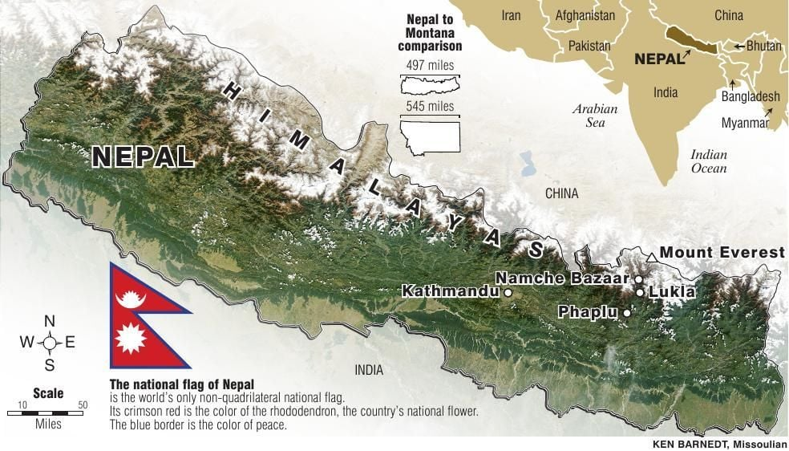

Nepal is a country situated in South Asia. Nepal is bordered by two major giant countries, India and China. Nepal is espically known for its Great Mountians, having 8 of the top 10 tallest mountians. Nepal has never been conquered dispite its small size, the Himalayas also make Nepal a difficult terrain to navigate through. Because Nepal hasn't been conquered they still follow their old calender system, so while the world is in the year 2023, Nepal is in 2080.
Nepal has a wide variety of cuisines, the most popular thing being Dhal-Bhat (Lentils and rice) and Momos (Nepalese dumplings). Momos are the most popular Nepalese food while Dhal-Bhat is the most eaten. Majority of nepalese are hindus meaning they dont eat beef, they often use buffalo as a substitute. Beacuse of Nepal's borders, they have food influnces from both India and China. Because of their altitues too they often eat things acoustomed to the cold, such as Yak or Goat meat.

Sports are VERY VERY popular in Nepal, although Nepal hasn't won many reconizible awards, the youth are determined on changing this. The national sport of nepal currently is Volleyball, but the previous one was Dandi Biyo, a sport played with 2 sticks and a stone.

Click this link